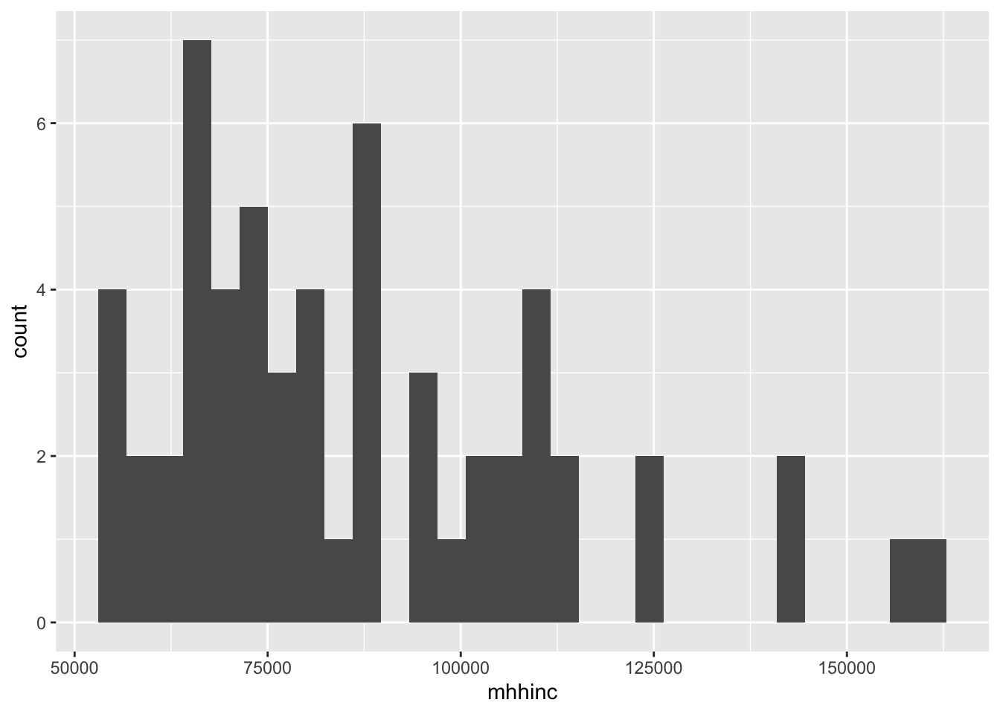
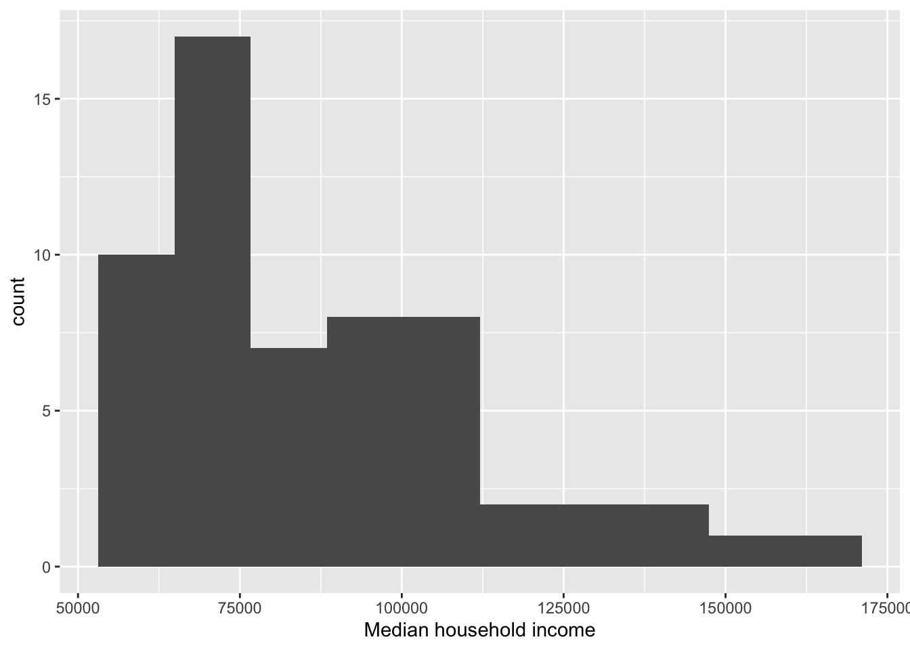

Lab 2: Geocoding, Vector Data, and Census Data
In this lab, we are going to work with vector data, which we’ve talked about last week. We are going to work with a dataset of cancer patients across California, as well as Census data on socioeconomic factors. We will also talk about geocoding addresses and will discuss how to visualize data.
The objectives of this guide are to teach you:
- How to geocode addresses
- How to bring in and visualize point data
- How to download Census data using the Census API
- How to conduct exploratory data analysis
Let’s get cracking!
Open up an R Markdown file
We hopefully remember some of this from last week in Lab 1, but let’s open an R Markdown file by clicking on File at the top menu in RStudio, select New File, and then R Markdown…. A window should pop up. In that window, for title, put in “Lab 2”. For author, put your name. Leave the HTML radio button clicked, and select OK. A new R Markdown file should pop up in the top left window.
What packages do we need?
Let’s load some packages that we will need this week. We need to load
any packages we previously installed using the function
library(). Remember, install once, load every time. And if
it gives you an error for no package called..., then we
need to install those packages using install.packages(). So
when using a package, library() should always be at the top
of your R Markdown.
library(sf)
library(MapGAM)## Loading required package: sp## Loading required package: gam## Loading required package: splines## Loading required package: foreach##
## Attaching package: 'foreach'## The following objects are masked from 'package:purrr':
##
## accumulate, when## Loaded gam 1.22-5## Loading required package: survival##
## Attaching package: 'survival'## The following object is masked _by_ '.GlobalEnv':
##
## cancerlibrary(tidyverse)
library(tidycensus)
library(ipumsr)
library(censusapi)
library(lehdr)
library(tidyUSDA)
library(flextable)##
## Attaching package: 'flextable'## The following object is masked from 'package:purrr':
##
## composelibrary(tidygeocoder)
library(crsuggest)## Using the EPSG Dataset v10.019, a product of the International Association of Oil & Gas Producers.
## Please view the terms of use at https://epsg.org/terms-of-use.html.
Geocoding
So, let’s say we wanted to map all of the marijuana dispensaries across San Francisco. Let’s download a .csv of these from the Github site, then take a look at the dataset.
download.file("https://raw.githubusercontent.com/pjames-ucdavis/SPH215/refs/heads/main/san_francisco_active_marijuana_retailers.csv", "san_francisco_active_marijuana_retailers.csv", mode = "wb")
sf_mj <- read_csv("san_francisco_active_marijuana_retailers.csv")## Rows: 33 Columns: 10
## ── Column specification ──────────────────────────────────────────────────────────
## Delimiter: ","
## chr (10): License Number, License Type, Business Owner, Business Structure, ...
##
## ℹ Use `spec()` to retrieve the full column specification for this data.
## ℹ Specify the column types or set `show_col_types = FALSE` to quiet this message.head(sf_mj) ## # A tibble: 6 × 10
## `License Number` `License Type` `Business Owner` `Business Structure`
## <chr> <chr> <chr> <chr>
## 1 C10-0000614-LIC Cannabis - Retailer Li… Terry Muller Limited Liability C…
## 2 C10-0000586-LIC Cannabis - Retailer Li… Jeremy Goodin Corporation
## 3 C10-0000587-LIC Cannabis - Retailer Li… Justin Jarin Corporation
## 4 C10-0000539-LIC Cannabis - Retailer Li… Ondyn Herschelle Corporation
## 5 C10-0000522-LIC Cannabis - Retailer Li… Ryan Hudson Limited Liability C…
## 6 C10-0000523-LIC Cannabis - Retailer Li… Ryan Hudson Limited Liability C…
## # ℹ 6 more variables: `Premise Address` <chr>, Status <chr>,
## # `Issue Date` <chr>, `Expiration Date` <chr>, Activities <chr>,
## # `Adult-Use/Medicinal` <chr>
OK, some interesting columns there, and we have Premise Address as a column that we might want to make spatial. Let’s look closer at that.
head(sf_mj$`Premise Address`)## [1] "2165 IRVING ST san francisco, CA 94122 County: SAN FRANCISCO"
## [2] "122 10TH ST SAN FRANCISCO, CA 941032605 County: SAN FRANCISCO"
## [3] "843 Howard ST SAN FRANCISCO, CA 94103 County: SAN FRANCISCO"
## [4] "70 SECOND ST SAN FRANCISCO, CA 94105 County: SAN FRANCISCO"
## [5] "527 Howard ST San Francisco, CA 94105 County: SAN FRANCISCO"
## [6] "2414 Lombard ST San Francisco, CA 94123 County: SAN FRANCISCO"
OK that column looks like what we want to geocode. But how do we take
these addresses and make them into spatial information? We have to
geocode them! To do so, we will use the tidygeocoder
package in R. But first, we see that the addresses look a little
strange. The address county is always “County: SAN FRANCISCO” so we will
gsub() out that entire string.
sf_mj$`Premise Address` <- gsub(" County: SAN FRANCISCO",
"", sf_mj$`Premise Address`)
head(sf_mj$`Premise Address`)## [1] "2165 IRVING ST san francisco, CA 94122"
## [2] "122 10TH ST SAN FRANCISCO, CA 941032605"
## [3] "843 Howard ST SAN FRANCISCO, CA 94103"
## [4] "70 SECOND ST SAN FRANCISCO, CA 94105"
## [5] "527 Howard ST San Francisco, CA 94105"
## [6] "2414 Lombard ST San Francisco, CA 94123"That looks much better.
Now let’s give a try to geocoding these addresses with the
tidygeocoder package. We will use the
geocode() function to add a latitude and longitude to each
of our addresses in the Premise Address column. We will use the
Open Street Map address database by specifying
method = "osm". This will take about a minute to run, so be
patient!
=
sf_mj_geo <- geocode(sf_mj, "Premise Address",
method = "osm")## Passing 33 addresses to the Nominatim single address geocoder## Query completed in: 33.2 secondshead(sf_mj_geo)## # A tibble: 6 × 12
## `License Number` `License Type` `Business Owner` `Business Structure`
## <chr> <chr> <chr> <chr>
## 1 C10-0000614-LIC Cannabis - Retailer Li… Terry Muller Limited Liability C…
## 2 C10-0000586-LIC Cannabis - Retailer Li… Jeremy Goodin Corporation
## 3 C10-0000587-LIC Cannabis - Retailer Li… Justin Jarin Corporation
## 4 C10-0000539-LIC Cannabis - Retailer Li… Ondyn Herschelle Corporation
## 5 C10-0000522-LIC Cannabis - Retailer Li… Ryan Hudson Limited Liability C…
## 6 C10-0000523-LIC Cannabis - Retailer Li… Ryan Hudson Limited Liability C…
## # ℹ 8 more variables: `Premise Address` <chr>, Status <chr>,
## # `Issue Date` <chr>, `Expiration Date` <chr>, Activities <chr>,
## # `Adult-Use/Medicinal` <chr>, lat <dbl>, long <dbl>
Hmm, looks like some of our addresses have an NA for
their lat and long. Let’s take a closer look.
summary(sf_mj_geo$lat)## Min. 1st Qu. Median Mean 3rd Qu. Max. NA's
## 37.71 37.75 37.78 37.77 37.78 37.80 10summary(sf_mj_geo$long)## Min. 1st Qu. Median Mean 3rd Qu. Max. NA's
## -122.5 -122.4 -122.4 -122.4 -122.4 -122.4 10
Looks like we have 10 addresses missing lat and 10 missing long. Let’s try this again using a different geocoding database called arcgis.
sf_mj_geo_arc <- geocode(sf_mj, "Premise Address",
method = "arcgis")## Passing 33 addresses to the ArcGIS single address geocoder## Query completed in: 16.9 secondshead(sf_mj_geo_arc)## # A tibble: 6 × 12
## `License Number` `License Type` `Business Owner` `Business Structure`
## <chr> <chr> <chr> <chr>
## 1 C10-0000614-LIC Cannabis - Retailer Li… Terry Muller Limited Liability C…
## 2 C10-0000586-LIC Cannabis - Retailer Li… Jeremy Goodin Corporation
## 3 C10-0000587-LIC Cannabis - Retailer Li… Justin Jarin Corporation
## 4 C10-0000539-LIC Cannabis - Retailer Li… Ondyn Herschelle Corporation
## 5 C10-0000522-LIC Cannabis - Retailer Li… Ryan Hudson Limited Liability C…
## 6 C10-0000523-LIC Cannabis - Retailer Li… Ryan Hudson Limited Liability C…
## # ℹ 8 more variables: `Premise Address` <chr>, Status <chr>,
## # `Issue Date` <chr>, `Expiration Date` <chr>, Activities <chr>,
## # `Adult-Use/Medicinal` <chr>, lat <dbl>, long <dbl>summary(sf_mj_geo_arc$lat)## Min. 1st Qu. Median Mean 3rd Qu. Max.
## 37.71 37.76 37.77 37.77 37.78 37.80summary(sf_mj_geo_arc$long)## Min. 1st Qu. Median Mean 3rd Qu. Max.
## -122.5 -122.4 -122.4 -122.4 -122.4 -122.4
Woohoo! No missingness. Love to see it. OK, let’s plot these data and see how they look.
plot(sf_mj_geo_arc$long, sf_mj_geo_arc$lat)
We are in business! We have taken addresses and converted them into
latitude and longitude! I think we need a badge! 
Bonus exercise! Let’s take these addresses and reverse geocode them. That’s just a fancy way of saying that we will take latitude and longitude data and convert it into readable addresses.
reverse <- sf_mj_geo_arc %>%
reverse_geocode(lat = lat, long = long, method = 'arcgis',
address = address_found, full_results = TRUE) %>%
select(-`Business Owner`,-`Business Structure`,-`License Number`,-`License Type`,-Status,-`Issue Date`,-`Expiration Date`,-Activities,-`Adult-Use/Medicinal`)## Passing 33 coordinates to the ArcGIS single coordinate geocoder## Query completed in: 19.9 secondshead(reverse)## # A tibble: 6 × 31
## `Premise Address` lat long address_found Match_addr ShortLabel Addr_type
## <chr> <dbl> <dbl> <chr> <chr> <chr> <chr>
## 1 2165 IRVING ST san … 37.8 -122. Smokin D's B… Smokin D'… Smokin D'… POI
## 2 122 10TH ST SAN FRA… 37.8 -122. Urbana Soma,… Urbana So… Urbana So… POI
## 3 843 Howard ST SAN F… 37.8 -122. Comart Busin… Comart Bu… Comart Bu… POI
## 4 70 SECOND ST SAN FR… 37.8 -122. Vsc, 76 2nd … Vsc Vsc POI
## 5 527 Howard ST San F… 37.8 -122. The Apotheca… The Apoth… The Apoth… POI
## 6 2414 Lombard ST San… 37.8 -122. Mile 7.6 Us … Mile 7.6 … Mile 7.6 … Distance…
## # ℹ 24 more variables: Type <chr>, PlaceName <chr>, AddNum <chr>,
## # Address <chr>, Block <chr>, Sector <chr>, Neighborhood <chr>,
## # District <chr>, City <chr>, MetroArea <chr>, Subregion <chr>, Region <chr>,
## # RegionAbbr <chr>, Territory <chr>, Postal <chr>, PostalExt <chr>,
## # CntryName <chr>, CountryCode <chr>, X <dbl>, Y <dbl>, InputX <dbl>,
## # InputY <dbl>, StrucType <chr>, StrucDet <chr>
Looking at Premise Address and address_found we can see that we did pretty well! Not perfect, but most are the right address or a few doors down. Well done!
Spatial Data in R
Although there are a few ways to work with vector spatial data in R, we will focus on the sf package in this course. The majority of spatial folks in R have shifted to sf for vector data, and so it makes sense to focus on it in the class.
Processing spatial data is very similar to nonspatial data thanks to the package sf, which is tidy friendly. sf stands for simple features. The Simple Features standard defines a simple feature as a representation of a real world object by a point or points that may or may not be connected by straight line segments to form lines or polygons. A feature is thought of as a thing, or an object in the real world, such as a building or a tree. A county can be a feature. As can a city and a neighborhood. Features have a geometry describing where on Earth the features are located, and they have attributes, which describe other properties.
Now let’s get our hands dirty working with some spatial data.
Import Cancer Data
For this lab, we will primarily be working with the MapGAM package. If you go to the link, you can read the reference manual on the various datasets available in the package. For this lab, we will mainly be working with the CAdata dataset. While they are based on real patterns expected in observational epidemiologic studies, these data have been simulated and are for teaching purposes only. The data contain 5000 simulated ovarian cancer cases. This is a cohort with time to mortality measured, but for the purposes of our class, we will conduct simple tabular analyses looking at associations between spatial exposures with mortality at end of follow-up.
The CAdata dataset contains the following variables: - time (follow-up time to either event of being censored) - event (1=dead, 0=censored) - X (Latitude) - Y (Longitude) - AGE (age in years) - INS (insurance status, categorical)
So let’s bring in the CAdata dataset and have a look at it.
#Download from Course Github site
download.file("https://raw.githubusercontent.com/pjames-ucdavis/SPH215/refs/heads/main/CA_Cancer_Data.rds", "ca_cancer.rds", mode = "wb")
#Load cancer dataset
CAdata <- readRDS("ca_cancer.rds")
head(CAdata)## time event AGE INS geometry
## 1 1.275976 1 67 Mcr POINT (-122.3492 38.3025)
## 14 3.509907 1 69 Mcr POINT (-121.9832 37.82052)
## 17 10.297702 0 75 Mng POINT (-122.3092 38.3314)
## 36 7.012532 0 46 Mcr POINT (-122.2031 38.09592)
## 55 3.389200 0 70 Mcr POINT (-122.6356 38.26257)
## 92 6.110251 1 59 Unk POINT (-122.0198 37.35523)glimpse(CAdata)## Rows: 974
## Columns: 5
## $ time <dbl> 1.2759763, 3.5099074, 10.2977017, 7.0125318, 3.3891999, 6.110…
## $ event <dbl> 1, 1, 0, 0, 0, 1, 1, 0, 0, 0, 0, 1, 0, 1, 0, 1, 1, 1, 1, 0, 1…
## $ AGE <int> 67, 69, 75, 46, 70, 59, 69, 79, 79, 45, 78, 78, 43, 72, 65, 7…
## $ INS <fct> Mcr, Mcr, Mng, Mcr, Mcr, Unk, Unk, Mcr, Mcr, Mcd, Mcr, Mcr, M…
## $ geometry <POINT [°]> POINT (-122.3492 38.3025), POINT (-121.9832 37.82052), …
OK, so the variables look great. Is it a spatial dataset that can be
recognized by R? Let’s check the coordinate reference system (CRS) using
the st_crs command in the sf package.
st_crs(CAdata)## Coordinate Reference System: NAHmmm, NA. That doesn’t look good. So how do we make this a spatial file? We will need to add a CRS.
Add coordinate reference system
Let’s add a CRS by using st_as_sf from the
sf package. We can see that X is our latitude column
and Y is our longitude column. We know that the CRS for this dataset is
State Plane Projected coordinate system, North America Datum
1983(NAD_1983_StatePlane_California_I_FIPS_0401) for California based on
the documentation for the MapGAM package. We then can
Google that along with “EPSG” and we get the EPSG code of 2229. The EPSG
code we can plug into the st_as_sf to tell R to create a
spatial dataset in sf that has the CRS of 2229. Then we
will double check the CRS.
head(CAdata)## time event AGE INS geometry
## 1 1.275976 1 67 Mcr POINT (-122.3492 38.3025)
## 14 3.509907 1 69 Mcr POINT (-121.9832 37.82052)
## 17 10.297702 0 75 Mng POINT (-122.3092 38.3314)
## 36 7.012532 0 46 Mcr POINT (-122.2031 38.09592)
## 55 3.389200 0 70 Mcr POINT (-122.6356 38.26257)
## 92 6.110251 1 59 Unk POINT (-122.0198 37.35523)CAdata_proj <- st_as_sf(CAdata, crs=2229)## Warning: st_crs<- : replacing crs does not reproject data; use st_transform for
## thathead(CAdata_proj)## Simple feature collection with 6 features and 4 fields
## Geometry type: POINT
## Dimension: XY
## Bounding box: xmin: -122.6356 ymin: 37.35523 xmax: -121.9832 ymax: 38.3314
## Projected CRS: NAD83 / California zone 5 (ftUS)
## time event AGE INS geometry
## 1 1.275976 1 67 Mcr POINT (-122.3492 38.3025)
## 14 3.509907 1 69 Mcr POINT (-121.9832 37.82052)
## 17 10.297702 0 75 Mng POINT (-122.3092 38.3314)
## 36 7.012532 0 46 Mcr POINT (-122.2031 38.09592)
## 55 3.389200 0 70 Mcr POINT (-122.6356 38.26257)
## 92 6.110251 1 59 Unk POINT (-122.0198 37.35523)st_crs(CAdata_proj)## Coordinate Reference System:
## User input: EPSG:2229
## wkt:
## PROJCRS["NAD83 / California zone 5 (ftUS)",
## BASEGEOGCRS["NAD83",
## DATUM["North American Datum 1983",
## ELLIPSOID["GRS 1980",6378137,298.257222101,
## LENGTHUNIT["metre",1]]],
## PRIMEM["Greenwich",0,
## ANGLEUNIT["degree",0.0174532925199433]],
## ID["EPSG",4269]],
## CONVERSION["SPCS83 California zone 5 (US survey foot)",
## METHOD["Lambert Conic Conformal (2SP)",
## ID["EPSG",9802]],
## PARAMETER["Latitude of false origin",33.5,
## ANGLEUNIT["degree",0.0174532925199433],
## ID["EPSG",8821]],
## PARAMETER["Longitude of false origin",-118,
## ANGLEUNIT["degree",0.0174532925199433],
## ID["EPSG",8822]],
## PARAMETER["Latitude of 1st standard parallel",35.4666666666667,
## ANGLEUNIT["degree",0.0174532925199433],
## ID["EPSG",8823]],
## PARAMETER["Latitude of 2nd standard parallel",34.0333333333333,
## ANGLEUNIT["degree",0.0174532925199433],
## ID["EPSG",8824]],
## PARAMETER["Easting at false origin",6561666.667,
## LENGTHUNIT["US survey foot",0.304800609601219],
## ID["EPSG",8826]],
## PARAMETER["Northing at false origin",1640416.667,
## LENGTHUNIT["US survey foot",0.304800609601219],
## ID["EPSG",8827]]],
## CS[Cartesian,2],
## AXIS["easting (X)",east,
## ORDER[1],
## LENGTHUNIT["US survey foot",0.304800609601219]],
## AXIS["northing (Y)",north,
## ORDER[2],
## LENGTHUNIT["US survey foot",0.304800609601219]],
## USAGE[
## SCOPE["Engineering survey, topographic mapping."],
## AREA["United States (USA) - California - counties Kern; Los Angeles; San Bernardino; San Luis Obispo; Santa Barbara; Ventura."],
## BBOX[32.76,-121.42,35.81,-114.12]],
## ID["EPSG",2229]]possible_crs <- suggest_crs(CAdata_proj)
glimpse(possible_crs)## Rows: 7
## Columns: 6
## $ crs_code <chr> "32607", "32407", "32207", "6931", "3395", "3857", "6933"
## $ crs_name <chr> "WGS 84 / UTM zone 7N", "WGS 72BE / UTM zone 7N", "WGS 72 / …
## $ crs_type <chr> "projected", "projected", "projected", "projected", "project…
## $ crs_gcs <dbl> 4326, 4324, 4322, 4326, 4326, 4326, 4326
## $ crs_units <chr> "m", "m", "m", "m", "m", "m", "m"
## $ crs_proj4 <chr> "+proj=utm +zone=7 +datum=WGS84 +units=m +no_defs", "+proj=u…Here we see that suggest_crs offers the top ten most
likely CRS options. Let’s transform our dataset to match the suggested
CRS.
CAdata_proj_fixed <- st_transform(CAdata_proj,32608)
st_crs(CAdata_proj_fixed)## Coordinate Reference System:
## User input: EPSG:32608
## wkt:
## PROJCRS["WGS 84 / UTM zone 8N",
## BASEGEOGCRS["WGS 84",
## ENSEMBLE["World Geodetic System 1984 ensemble",
## MEMBER["World Geodetic System 1984 (Transit)"],
## MEMBER["World Geodetic System 1984 (G730)"],
## MEMBER["World Geodetic System 1984 (G873)"],
## MEMBER["World Geodetic System 1984 (G1150)"],
## MEMBER["World Geodetic System 1984 (G1674)"],
## MEMBER["World Geodetic System 1984 (G1762)"],
## MEMBER["World Geodetic System 1984 (G2139)"],
## MEMBER["World Geodetic System 1984 (G2296)"],
## ELLIPSOID["WGS 84",6378137,298.257223563,
## LENGTHUNIT["metre",1]],
## ENSEMBLEACCURACY[2.0]],
## PRIMEM["Greenwich",0,
## ANGLEUNIT["degree",0.0174532925199433]],
## ID["EPSG",4326]],
## CONVERSION["UTM zone 8N",
## METHOD["Transverse Mercator",
## ID["EPSG",9807]],
## PARAMETER["Latitude of natural origin",0,
## ANGLEUNIT["degree",0.0174532925199433],
## ID["EPSG",8801]],
## PARAMETER["Longitude of natural origin",-135,
## ANGLEUNIT["degree",0.0174532925199433],
## ID["EPSG",8802]],
## PARAMETER["Scale factor at natural origin",0.9996,
## SCALEUNIT["unity",1],
## ID["EPSG",8805]],
## PARAMETER["False easting",500000,
## LENGTHUNIT["metre",1],
## ID["EPSG",8806]],
## PARAMETER["False northing",0,
## LENGTHUNIT["metre",1],
## ID["EPSG",8807]]],
## CS[Cartesian,2],
## AXIS["(E)",east,
## ORDER[1],
## LENGTHUNIT["metre",1]],
## AXIS["(N)",north,
## ORDER[2],
## LENGTHUNIT["metre",1]],
## USAGE[
## SCOPE["Navigation and medium accuracy spatial referencing."],
## AREA["Between 138°W and 132°W, northern hemisphere between equator and 84°N, onshore and offshore. Canada - British Columbia (BC); Northwest Territiories (NWT); Yukon. United States (USA) - Alaska (AK)."],
## BBOX[0,-138,84,-132]],
## ID["EPSG",32608]]Map the cancer data
Nice! We have a spatial dataset. That geometry column is how sf stores the geographic data, and we definitely have a full CRS with all sorts of info. OK, let’s plot our data to make sure they look spatial!
plot(CAdata_proj)
Looking good! Get yourself a cookie.
Downloading Census Data
One of the primary sources of data that we’ll be using in this class is the United States Decennial Census and the American Community Survey. There are two ways to bring Census data into R: Downloading it from an online source or using an API.
Note that we will gather 2016-2020 ACS data from all sources. Census boundaries changed in 2020, which means that 2016-2020 data will not completely merge with ACS data before 2020. So make sure you merge 2020 data only with 2020 data (but you can merge 2019 data with data between 2010-2019). This is especially important for tract data, with many new tracts created in 2020 and existing tracts experiencing dramatic changes in their boundaries between 2010 and 2020. See the impact of tract boundary changes between 2000 and 2010 here. You may also explore the Neighborhood Change Database which is available through the UC Davis library, and is a dataset that incorporates tract boundary changes over time. We are working on acquiring the 2020 data there!
Download Census data from an online source
The first way to obtain Census data is to download them directly from the web onto your hard drive. There are several websites where you can download Census data including Social Explorer and PolicyMap, which we have free access to as UC Davis affiliates, and the National Historical Geographic Information System (NHGIS), which is free for everyone. To find out how to download data from PolicyMap and NHGIS, check out tutorials here and [here]https://www.nhgis.org/user-resources/users-guide).
Use the Census API and tidycensus
The other way to bring Census data into R is to use the [Census Application Program Interface (API)]https://www.census.gov/data/developers/guidance/api-user-guide.What_is_the_API.html). An API allows for direct requests for data in machine-readable form. That is, rather than you having to navigate to some website, scroll around to find a dataset, download that dataset once you find it, save that data onto your hard drive, and then bring the data into R, you just tell R to retrieve data directly from the source using one or two lines of code.
In order to directly download data from the Census API, you need a key. You can sign up for a free key here, which you should have already done before the lab. Type your key in quotes using the census_api_key() command.
census_api_key("YOUR API KEY GOES HERE", install = TRUE)
The option install = TRUE saves the API key in your R
environment, which means you don’t have to run
census_api_key() every single time. The function for
downloading American Community Survey (ACS) Census data is
get_acs(). The command for downloading decennial Census
data is get_decennial(). Both functions come from the
tidycensus package, which allows users to interface
with the US Census Bureau’s decennial Census and American Community
Survey APIs. Getting variables using the Census API requires knowing the
variable ID - and there are thousands of variables (and thus thousands
of IDs) across the different Census files. To rapidly search for
variables, use the commands load_variables() and
View(). Because we’ll be using the ACS in this guide, let’s
check the variables in the most recent 2023 5-year ACS (2019-2023) using
the following commands.
v23 <- load_variables(2023, "acs5", cache = TRUE)
View(v23)
A window should have popped up showing you a record layout of the 2019-2023 ACS. To search for specific data, select “Filter” located at the top left of this window and use the search boxes that pop up. For example, type in “Hispanic” in the box under “Label”. You should see near the top of the list the first set of variables we’ll want to download - race/ethnicity. Another way of finding variable names is to search them using Social Explorer. Click on the appropriate survey data year and then “American Community Survey Tables”, which will take you to a list of variables with their Census IDs.
Let’s extract race/ethnicity data and total population for California
counties using the get_acs() command.
ca <- get_acs(geography = "county",
year = 2023,
variables = c(tpopr = "B03002_001",
nhwhite = "B03002_003", nhblk = "B03002_004",
nhasn = "B03002_006", hisp = "B03002_012"),
state = "CA",
survey = "acs5",
output = "wide")## Getting data from the 2019-2023 5-year ACS
In the above code, we specified the following arguments
geography: The level of geography we want the data in; in our case, the county. Other geographic options can be found [here]https://walkerke.github.io/tidycensus/articles/basic-usage.html#geography-in-tidycensus).year: The end year of the data (because we want 2016-2020, we use 2020).variables: The variables we want to bring in as specified in a vector you create using the functionc(). Note that we created variable names of our own (e.g. “nhwhite”) and we put the ACS IDs in quotes (“B03002_003”). Had we not done this, the variable names will come in as they are named in the ACS, which are not very descriptive.state: We can filter the counties to those in a specific state. Here it is “CA” for California. If we don’t specify this, we get all counties in the United States.survey: The specific Census survey were extracting data from. We want data from the 5-year American Community Survey, so we specify “acs5”. The ACS comes in 1- and 5-year - varieties.output: The argument tells R to return a wide dataset as opposed to a long dataset (see this vignette for more info).
Another useful option to set is cache_table = TRUE, so
you don’t have to re-download after you’ve downloaded successfully the
first time. Type in ? get_acs() to see the full list of
options.
As you learned in Lab 1, whenever you bring in a dataset, the first
thing you should always do is view it to get a sense of its structure
and to make sure you got what you expected. One way of doing this is to
use the glimpse() command
glimpse(ca)## Rows: 58
## Columns: 12
## $ GEOID <chr> "06001", "06003", "06005", "06007", "06009", "06011", "06013"…
## $ NAME <chr> "Alameda County, California", "Alpine County, California", "A…
## $ tpoprE <dbl> 1651949, 1695, 41029, 209470, 45995, 21895, 1161458, 27293, 1…
## $ tpoprM <dbl> NA, 234, NA, NA, NA, NA, NA, NA, NA, NA, NA, NA, NA, NA, NA, …
## $ nhwhiteE <dbl> 466445, 993, 30234, 139527, 35599, 6869, 455961, 16668, 14254…
## $ nhwhiteM <dbl> 1170, 215, 341, 767, 318, 133, 1843, 199, 589, 979, 75, 554, …
## $ nhblkE <dbl> 159042, 0, 781, 3550, 529, 311, 94864, 805, 1522, 42060, 158,…
## $ nhblkM <dbl> 1736, 14, 143, 393, 140, 44, 1594, 123, 232, 1334, 126, 271, …
## $ nhasnE <dbl> 528377, 8, 587, 11010, 1066, 101, 212373, 821, 9640, 108809, …
## $ nhasnM <dbl> 2269, 8, 129, 497, 238, 159, 2008, 264, 416, 1332, 182, 403, …
## $ hispE <dbl> 385245, 249, 6361, 40829, 6403, 13639, 316799, 5350, 27230, 5…
## $ hispM <dbl> NA, 115, NA, NA, NA, NA, NA, NA, NA, NA, NA, NA, NA, NA, NA, …
You get a quick, compact summary of your tibble. You can also use the
head() command, which shows you the first several rows of
your data object (tail() will give you the last several
rows).
head(ca)## # A tibble: 6 × 12
## GEOID NAME tpoprE tpoprM nhwhiteE nhwhiteM nhblkE nhblkM nhasnE nhasnM hispE
## <chr> <chr> <dbl> <dbl> <dbl> <dbl> <dbl> <dbl> <dbl> <dbl> <dbl>
## 1 06001 Alam… 1.65e6 NA 466445 1170 159042 1736 528377 2269 385245
## 2 06003 Alpi… 1.69e3 234 993 215 0 14 8 8 249
## 3 06005 Amad… 4.10e4 NA 30234 341 781 143 587 129 6361
## 4 06007 Butt… 2.09e5 NA 139527 767 3550 393 11010 497 40829
## 5 06009 Cala… 4.60e4 NA 35599 318 529 140 1066 238 6403
## 6 06011 Colu… 2.19e4 NA 6869 133 311 44 101 159 13639
## # ℹ 1 more variable: hispM <dbl>
The tibble contains counties with their estimates for race/ethnicity. These variables end with the letter “E”. It also contains the margins of error for each estimate. These variables end with the letter “M”.
tidycensus is a game changer in being able to bring in Census data into R in a convenient, fast, efficient and tidy friendly way. We’ll be using this package in the next lab to bring in Census spatial data. And congratulations! You’ve just earned another badge. Fantastic!

Reading in data
PolicyMap
To save us time, I’ve uploaded a PolicyMap (link
to .csv) on the Github for you to use in this lab. Save this file in
the same folder where your Lab 2 R Markdown file resides.To read in a
.csv file, first make sure that R is pointed to the folder you saved
your data into. Type in getwd() to find out the current
directory and setwd("directory name") to set the directory
to the folder containing the data.
From a Mac laptop, I type in the following command to set the directory to the folder containing my data.
setwd("/Users/pjames1/Dropbox/UC Davis Folders/SPH 215 GIS and Public Health/Github_Website/SPH215/")
For a Windows system, you can find the pathway of a file by right clicking on it and selecting Properties. You will find that instead of a forward slash like in a Mac, a windows pathway will be indicated by a single back slash . R doesn’t like this because it thinks of a single back slash as an escape character. Use instead two back slashes \
setwd("C:\\Users\\pjames\\Documents\\UCD\\Spring2025\\SPH215\\Labs\\Lab 2")or a forward slash /.
setwd("C:/Users/pjames/Documents/UCD/Spring2025/SPH215/Labs/Lab 2")You can also manually set the working directory by clicking on Session -> Set Working Directory -> Choose Directory from the menu.
Once you’ve set your directory, use the function
read_csv(), which is a part of the
tidyverse package, and plug in the name of the file in
quotes inside the parentheses. Make sure you include the .csv
extension.
ca.pm <- read_csv("PolicyMap Data 2025-03-27 192555 UTC.csv", skip = 1)## Rows: 58 Columns: 10
## ── Column specification ──────────────────────────────────────────────────────────
## Delimiter: ","
## chr (8): GeoID_Description, GeoID_Name, SitsinState, GeoID, GeoID_Formatted,...
## dbl (2): mhhinc, GeoVintage
##
## ℹ Use `spec()` to retrieve the full column specification for this data.
## ℹ Specify the column types or set `show_col_types = FALSE` to quiet this message.
The option skip = 1 tells R to skip the first row of the file when bringing it in. This is done because there are two rows of column names. The first row contains the extended version, while the second is the abridged version. Above we keep the abridged version.
You should see a tibble ca.pm pop up in your Environment window (top right). What does our data set look like?
glimpse(ca.pm)## Rows: 58
## Columns: 10
## $ GeoID_Description <chr> "County", "County", "County", "County", "County", "C…
## $ GeoID_Name <chr> "Alameda", "Alpine", "Amador", "Butte", "Calaveras",…
## $ SitsinState <chr> "CA", "CA", "CA", "CA", "CA", "CA", "CA", "CA", "CA"…
## $ GeoID <chr> "06001", "06003", "06005", "06007", "06009", "06011"…
## $ GeoID_Formatted <chr> "=\"06001\"", "=\"06003\"", "=\"06005\"", "=\"06007\…
## $ mhhinc <dbl> 126240, 110781, 81526, 68574, 79877, 75149, 125727, …
## $ TimeFrame <chr> "2019-2023", "2019-2023", "2019-2023", "2019-2023", …
## $ GeoVintage <dbl> 2022, 2022, 2022, 2022, 2022, 2022, 2022, 2022, 2022…
## $ Source <chr> "Census", "Census", "Census", "Census", "Census", "C…
## $ Location <chr> "California (State)", "California (State)", "Califor…
If you like viewing your data through an Excel style worksheet, type in View(ca.pm), and ca.pm should pop up in the top left window of your R Studio interface.
More data wrangling
We learned about the various data wrangling related functions from the tidyverse package in Lab 1. Let’s employ some of those functions to create a single county level dataset that joins the datasets we downloaded from the Census API and PolicyMap.
We are going to combine these datasets using the county FIPS codes. In the Census API and PolicyMap, these are contained in the variables GEOID and GeoID, respectively. Let’s make sure they are in the same class.
class(ca.pm$GeoID)## [1] "character"class(ca$GEOID)## [1] "character"
Piping
One of the important innovations from the tidyverse is the pipe
operator %>%. You use the pipe operator when you want to
combine multiple operations into one line of continuous code. Let’s
create our final data object cacounty using our brand new
friend the pipe.
cacounty <- ca %>%
left_join(ca.pm, by = c("GEOID" = "GeoID")) %>%
mutate(pwhite = nhwhiteE/tpoprE, pasian = nhasnE/tpoprE,
pblack = nhblkE/tpoprE, phisp = hispE/tpoprE,
mhisp = case_when(phisp > 0.5 ~ "Majority",
TRUE ~ "Not Majority")) %>%
rename(County = GeoID_Name) %>%
select(GEOID, County, pwhite, pasian, pblack, phisp, mhisp, mhhinc)
glimpse(cacounty)## Rows: 58
## Columns: 8
## $ GEOID <chr> "06001", "06003", "06005", "06007", "06009", "06011", "06013", …
## $ County <chr> "Alameda", "Alpine", "Amador", "Butte", "Calaveras", "Colusa", …
## $ pwhite <dbl> 0.28236041, 0.58584071, 0.73689342, 0.66609538, 0.77397543, 0.3…
## $ pasian <dbl> 0.319850673, 0.004719764, 0.014306954, 0.052561226, 0.023176432…
## $ pblack <dbl> 0.0962753693, 0.0000000000, 0.0190353165, 0.0169475343, 0.01150…
## $ phisp <dbl> 0.2332064, 0.1469027, 0.1550367, 0.1949157, 0.1392108, 0.622927…
## $ mhisp <chr> "Not Majority", "Not Majority", "Not Majority", "Not Majority",…
## $ mhhinc <dbl> 126240, 110781, 81526, 68574, 79877, 75149, 125727, 66780, 1061…Let’s break down what the pipe is doing here. First, you start out
with your dataset ca. You “pipe” that into the command
left_join(). Notice that you didn’t have to type in ca
inside that command - %>% pipes that in for you. The
command joins the data object ca.pm to ca. The result
of this function gets piped into the mutate() function,
which creates the percent race/ethnicity (from the Census API), and
majority Hispanic variables. This gets piped into the
rename() function, which renames the ambiguous variable
name GeoID_Name to the more descriptive name County.
This then gets piped into the final function, select(),
which keeps the necessary variables. Finally, the code saves the result
into cacounty which we designated at the beginning with the arrow
operator.
Piping makes code clearer, and simultaneously gets rid of the need to define any intermediate objects that you would have needed to keep track of while reading the code. PIPE, Pipe, and pipe whenever you can. We need some stinkin badges!

/
Saving data
If you want to save your data frame or tibble as a csv file on your
hard drive, use the command write_csv(). Before you save a
file, make sure R is pointed to the appropriate folder on your hard
drive by using the function getwd(). If it’s not pointed to
the right folder, use the function setwd() to set the
appropriate working directory.
write_csv(cacounty, "lab2_file.csv")The first argument is the name of the R object you want to save. The second argument is the name of the csv file in quotes. Make sure to add the .csv extension. The file is saved in your current working directory.
Exploratory data analysis
The functions above help us bring in and clean data. The next set of functions covered in this section will help us summarize the data. Data refer to pieces of information that describe a status or a measure of magnitude. A variable is a set of observations on a particular characteristic. The distribution of a variable is a listing showing all the possible values of the data for that variable and how often they occur. Exploratory Data Analysis (EDA) encompasses a set of methods (some would say a framework or perspective) for summarizing a variable’s distribution, and the relationship between the distributions of two or more variables. We will cover two general approaches to summarizing your data: descriptive statistics and visualization via graphs and charts.
Descriptive statistics
When describing a distribution, your quantitative message is often best communicated by reducing data to a few summary numbers. These numbers are meant to summarize the “typical” value in the distribution (e.g., mean, median, mode) and the variation or “spread” in the distribution (e.g., minimum/maximum, interquartile range, standard deviation). These summary numbers are known as descriptive statistics.
We can use the function summarize() to get descriptive statistics of our data. For example, let’s calculate the mean household income in California counties. The first argument inside summarize() is the data object cacounty and the second argument is the function calculating the specific summary statistic, in this case mean().
cacounty %>%
summarize(Mean = mean(mhhinc))## # A tibble: 1 × 1
## Mean
## <dbl>
## 1 87001.The average county median household income is $87,001. If the
variable mhhinc contained missing values, we would have gotten
NA as a result. To omit missing values from the calculation,
you need to add rm = TRUE to mean().
We can calculate more than one summary statistic within
summarize(). What is the spread of the distribution? We can
add to summarize() the function sd() to
calculate the standard deviation.
cacounty %>%
summarize(Mean = mean(mhhinc), SD = sd(mhhinc))## # A tibble: 1 × 2
## Mean SD
## <dbl> <dbl>
## 1 87001. 25547.
Does the average income differ by California region? First, let’s
create a new variable region designating each county as Bay Area,
Southern California, Central Valley, Capital Region and the Rest of
California using the case_when() function within the
mutate() function.
cacounty <- cacounty %>%
mutate(region = case_when(County == "Sonoma" | County == "Napa" |
County == "Solano" | County == "Marin" |
County == "Contra Costa" | County == "San Francisco" |
County == "San Mateo" | County == "Alameda" |
County == "Santa Clara" ~ "Bay Area",
County == "Imperial" | County == "Los Angeles" |
County == "Orange" | County == "Riverside" |
County == "San Diego" | County == "San Bernardino" |
County == "Ventura" ~ "Southern California",
County == "Fresno" | County == "Madera" |
County == "Mariposa" | County == "Merced" |
County == "Tulare" |
County == "Kings" ~ "Central Valley",
County == "Alpine" | County == "Colusa" |
County == "El Dorado" | County == "Glenn" |
County == "Placer" | County == "Sacramento" |
County == "Sutter" | County == "Yolo" |
County == "Yuba" ~ "Capital Region",
TRUE ~ "Rest"))
Next, we need to pair summarize() with the function
group_by(). The function group_by() tells R to
run subsequent functions on the data object by a group characteristic
(such as gender, educational attainment, or in this case, region). We’ll
need to use our new best friend %>% to accomplish this task.
cacounty %>%
group_by(region) %>%
summarize(Mean = mean(mhhinc))## # A tibble: 5 × 2
## region Mean
## <chr> <dbl>
## 1 Bay Area 129297.
## 2 Capital Region 89288.
## 3 Central Valley 69265.
## 4 Rest 74959.
## 5 Southern California 91332.The first pipe sends cacounty into the function
group_by(), which tells R to group cacounty by the
variable region.
How do you know the tibble is grouped? Because it tells you!
cacounty %>%
group_by(region) ## # A tibble: 58 × 9
## # Groups: region [5]
## GEOID County pwhite pasian pblack phisp mhisp mhhinc region
## <chr> <chr> <dbl> <dbl> <dbl> <dbl> <chr> <dbl> <chr>
## 1 06001 Alameda 0.282 0.320 0.0963 0.233 Not Majority 126240 Bay Area
## 2 06003 Alpine 0.586 0.00472 0 0.147 Not Majority 110781 Capital …
## 3 06005 Amador 0.737 0.0143 0.0190 0.155 Not Majority 81526 Rest
## 4 06007 Butte 0.666 0.0526 0.0169 0.195 Not Majority 68574 Rest
## 5 06009 Calaveras 0.774 0.0232 0.0115 0.139 Not Majority 79877 Rest
## 6 06011 Colusa 0.314 0.00461 0.0142 0.623 Majority 75149 Capital …
## 7 06013 Contra Costa 0.393 0.183 0.0817 0.273 Not Majority 125727 Bay Area
## 8 06015 Del Norte 0.611 0.0301 0.0295 0.196 Not Majority 66780 Rest
## 9 06017 El Dorado 0.741 0.0501 0.00791 0.142 Not Majority 106190 Capital …
## 10 06019 Fresno 0.270 0.108 0.0416 0.541 Majority 71434 Central …
## # ℹ 48 more rows
The second pipe takes this grouped dataset and sends it into the
summarize() command, which calculates the mean income (by
region, because the dataset is grouped by region).
To get the mean, median and standard deviation of median income, its correlation with percent Hispanic, and give column labels for the variables in the resulting summary table, we type in:
cacounty %>%
group_by(region) %>%
summarize(Mean = mean(mhhinc),
Median = median(mhhinc),
SD = sd(mhhinc),
Correlation = cor(mhhinc, phisp))## # A tibble: 5 × 5
## region Mean Median SD Correlation
## <chr> <dbl> <dbl> <dbl> <dbl>
## 1 Bay Area 129297. 126240 22246. -0.620
## 2 Capital Region 89288. 88724 17295. -0.788
## 3 Central Valley 69265. 69120. 3918. 0.423
## 4 Rest 74959. 71931 15803. 0.606
## 5 Southern California 91332. 89672 19132. -0.951
The variable mhhinc is numeric. How do we summarize
categorical variables? We usually summarize categorical variables by
examining a frequency table. To get the percent of counties that have a
majority Hispanic population mhisp, you’ll need to combine the functions
group_by(), summarize() and mutate() using
%>%.
cacounty %>%
group_by(mhisp) %>%
summarize(n = n()) %>%
mutate(freq = n / sum(n))## # A tibble: 2 × 3
## mhisp n freq
## <chr> <int> <dbl>
## 1 Majority 12 0.207
## 2 Not Majority 46 0.793
The code group_by(mhisp) separates the counties by the categories of mhisp (Majority, Not Majority). We then used summarize() to count the number of counties that are Majority and Not Majority. The function to get a count is n(), and we saved this count in a variable named n. Next, we used mutate() on this table to get the proportion of counties by Majority Hispanic designation. The code sum(n) adds the values of n. We then divide the value of each n by this sum. That yields the final frequency table.
Instead of calculating descriptive statistics one at a time using summarize(), you can obtain a set of summary statistics for one or all the numeric variables in your dataset using the summary() function.
summary(cacounty)## GEOID County pwhite pasian
## Length:58 Length:58 Min. :0.09421 Min. :0.00000
## Class :character Class :character 1st Qu.:0.31535 1st Qu.:0.01888
## Mode :character Mode :character Median :0.49018 Median :0.04404
## Mean :0.50723 Mean :0.07748
## 3rd Qu.:0.66599 3rd Qu.:0.08630
## Max. :0.88832 Max. :0.39306
## pblack phisp mhisp mhhinc
## Min. :0.000000 Min. :0.05892 Length:58 Min. : 53498
## 1st Qu.:0.009634 1st Qu.:0.15611 Class :character 1st Qu.: 67888
## Median :0.016844 Median :0.27110 Mode :character Median : 80702
## Mean :0.028112 Mean :0.32170 Mean : 87001
## 3rd Qu.:0.033734 3rd Qu.:0.46747 3rd Qu.:102701
## Max. :0.125967 Max. :0.85579 Max. :159674
## region
## Length:58
## Class :character
## Mode :character
##
##
##
Tables for presentation
The output from the descriptive statistics we’ve ran so far is not presentation ready. For example, taking a screenshot of the following results table produces unnecessary information that is confusing and messy.
cacounty %>%
group_by(region) %>%
summarize(Mean = mean(mhhinc),
Median = median(mhhinc),
SD = sd(mhhinc),
Correlation = cor(mhhinc, phisp))## # A tibble: 5 × 5
## region Mean Median SD Correlation
## <chr> <dbl> <dbl> <dbl> <dbl>
## 1 Bay Area 129297. 126240 22246. -0.620
## 2 Capital Region 89288. 88724 17295. -0.788
## 3 Central Valley 69265. 69120. 3918. 0.423
## 4 Rest 74959. 71931 15803. 0.606
## 5 Southern California 91332. 89672 19132. -0.951Furthermore, you would like to show a table, say, in a Story Map that does not require you to take a screenshot or copying and pasting into Excel, but instead can be produced via code, that way it can be fixed if there is an issue, and is reproducible.
One way of producing presentation tables in R is through the flextable package. First, you will need to save the tibble or data frame of results into an object. For example, let’s save the above results into an object named region.summary
region.summary <- cacounty %>%
group_by(region) %>%
summarize(Mean = mean(mhhinc),
Median = median(mhhinc),
SD = sd(mhhinc),
Correlation = cor(mhhinc, phisp))You then input the object into the function flextable(). Save it into an object called my_table
my_table <- flextable(region.summary)
You should see a relatively clean table pop up either in your console or Viewer window.
What kind of object is my_table?
class(my_table)## [1] "flextable"
After doing this, we can progressively pipe the my_table object through more flextable formatting functions. For example, you can change the column header names using the function set_header_labels() and center the header names using the function align().
my_table <- my_table %>%
set_header_labels(
region = "Region",
Mean = "Mean",
Median = "Median",
SD = "Standard Deviation",
Correlation = "Correlation") %>%
align(align = "center")
my_tableRegion | Mean | Median | Standard Deviation | Correlation |
|---|---|---|---|---|
Bay Area | 129,297.33 | 126,240.0 | 22,246.495 | -0.6196837 |
Capital Region | 89,287.78 | 88,724.0 | 17,294.860 | -0.7878129 |
Central Valley | 69,265.17 | 69,119.5 | 3,918.442 | 0.4231022 |
Rest | 74,958.74 | 71,931.0 | 15,803.202 | 0.6064605 |
Southern California | 91,331.86 | 89,672.0 | 19,131.821 | -0.9513650 |
Well doesn’t that look spiffy! There are a slew of options for formatting your table, including adding footnotes, borders, shade and other features. Check out this useful tutorial for an explanation of some of these features.
Once you’re done formatting your table, you can then export it to
Word, PowerPoint or HTML or as an image (PNG) files. To do this, use one
of the following functions: save_as_docx(),
save_as_pptx(), save_as_image(), and
save_as_html().
Use the save_as_image() function to save your table as
an image.
save_as_image(my_table, path = "reg_income.png")## [1] "reg_income.png"You first put in the table my_table, and set the file name with the png extension. Check your working directory. You should see the file reg_income.png.
Data visualization
Another way of summarizing variables and their relationships is
through graphs and charts. The main package for R graphing is
ggplot2 which is a part of the tidyverse package. The
graphing function is ggplot() and it takes on the basic
template
ggplot(data = ) +
ggplot()is the base function where you specify your dataset using the data = argument.- You then need to build on this base by using the plus operator + and
() where () is a unique geom function indicating the type of graph you want to plot. Each unique function has its unique set of mapping arguments which you specify using the mapping = aes() argument. Charts and graphs have an x-axis, y-axis, or both. Check this ggplot cheat sheet for all possible geoms. <OPTIONS>()are a set of functions you can specify to change the look of the graph, for example relabeling the axes or adding a title.
The basic idea is that a ggplot graphic layers geometric objects (circles, lines, etc), themes, and scales on top of data.
You first start out with the base layer. It represents the empty
ggplot layer defined by the ggplot() function.
cacounty %>%
ggplot()
We get an empty plot. We haven’t told ggplot() what type of geometric object(s) we want to plot, nor how the variables should be mapped to the geometric objects, so we just have a blank plot. We have geoms to paint the blank canvas.
From here, we add a “geom” layer to the ggplot object. Layers are added to ggplot objects using +, instead of %>%, since you are not explicitly piping an object into each subsequent layer, but adding layers on top of one another. Each geom is associated with a specific type of graph.
Let’s go through some of the more common and popular graphs for visualizing your data.
Histogram
A typical visual for summarizing a single numeric variable is a histogram. To create a histogram, use geom_histogram() for <GEOM_FUNCTION()>. Let’s create a histogram of median household income. Note that we don’t need to specify the y= here because we are plotting only one variable. We pipe in the object cacounty into ggplot() to establish the base layer. We then use geom_histogram() to add the data layer on top of the base.
cacounty %>%
ggplot() +
geom_histogram(mapping = aes(x=mhhinc)) ## `stat_bin()` using `bins = 30`. Pick better value with `binwidth`.
We can continue to add layers to the plot. For example, we use the argument xlab(“Median household income”) to label the x-axis as “Median household income”.
cacounty %>%
ggplot() +
geom_histogram(mapping = aes(x=mhhinc)) +
xlab("Median household income")## `stat_bin()` using `bins = 30`. Pick better value with `binwidth`.
Note the message produced with the plot. It tells us that we can use the bins = argument to change the number of bins used to produce the histogram. You can increase the number of bins to make the bins narrower and thus get a finer grain of detail. Or you can decrease the number of bins to get a broader visual summary of the shape of the variable’s distribution. Compare bins = 10 to bins = 50.
Boxplot
We can use a boxplot to visually summarize the distribution of a single numeric variable or the relationship between a categorical and numeric variable. Use geom_boxplot() for <GEOM_FUNCTION()> to create a boxplot. Let’s examine median household income. Note that a boxplot uses y= rather than x= to specify where mhhinc goes. We also provide a descriptive y-axis label using the ylab() function.
cacounty %>%
ggplot() +
geom_boxplot(mapping = aes(y = mhhinc)) +
ylab("Median household income")
Let’s examine the distribution of median income by mhisp. Because we are examining the association between two variables, we need to specify x and y variables in aes() (we also specify both x- and y-axis labels).
cacounty %>%
ggplot() +
geom_boxplot(mapping = aes(x = mhisp, y = mhhinc)) +
xlab("Majority Hispanic") +
ylab("Median household income")
The top and bottom of a boxplot represent the 75th and 25th percentiles, respectively. The line in the middle of the box is the 50th percentile. Points outside the whiskers represent outliers. Outliers are defined as having values that are either larger than the 75th percentile plus 1.5 times the IQR or smaller than the 25th percentile minus 1.5 times the IQR.
The boxplot is for all counties combined. Use the facet_wrap() function to separate by region. Notice the tilde ~ before the variable region inside facet_wrap().
cacounty %>%
ggplot() +
geom_boxplot(mapping = aes(x = mhisp, y = mhhinc)) +
xlab("Majority Hispanic") +
ylab("Median household income") +
facet_wrap(~region) 
Bar chart
The primary purpose of a bar chart is to illustrate and compare the
values for a categorical variable. Bar charts show either the number or
frequency of each category. To create a bar chart, use geom_bar() for
cacounty %>%
group_by(region) %>%
summarize(Mean = mean(mhhinc)) %>%
ggplot(aes(x=region, y = Mean)) +
geom_bar(stat = "Identity") +
xlab("Region") +
ylab("Average household income")Right now the bars are ordered based on the region names. We can order the bars in descending order based on household income by using the reorder() function. Notice the negative sign in front of Mean to order by descending order.
cacounty %>%
group_by(region) %>%
summarize(Mean = mean(mhhinc)) %>%
ggplot(aes(x=reorder(region, -Mean), y = Mean)) +
geom_bar(stat = "Identity") +
xlab("Region") +
ylab("Average household income")
We can flip the axes using the function coord_flip().
cacounty %>%
group_by(region) %>%
summarize(Mean = mean(mhhinc)) %>%
ggplot(aes(x=reorder(region, -Mean), y = Mean)) +
geom_bar(stat = "Identity") +
xlab("Region") +
ylab("Average household income") +
coord_flip()
ggplot() is a powerful function, and you can make a lot of visually captivating graphs. We have just scratched the surface of its functions and features. You can also make your graphs really “pretty” and professional looking by altering graphing features, including colors, labels, titles and axes. For a list of ggplot() functions that alter various features of a graph, check out Chapter 28 in RDS.
Here’s your ggplot2 badge. Wear it with pride!

Acknowledgements
Major acknowledgements to Noli Brazil (as always) and Crime by the Numbers.